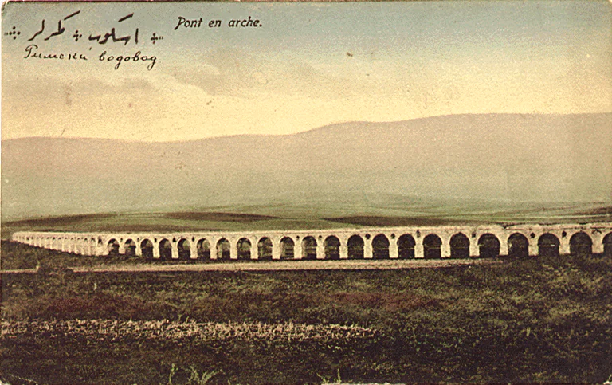

Акведук
- Производство
- УФУЖ и Документальное кино Прага
- Сценарий и режиссура
- Славко Яневски и EMAN CANERA
- Год
- 1959
- Продолжительность
- 00:16

На окраине Скопье, у дороги Скопье - Качаник (справа), стоит старый акведук из камня и кирпича. Монументальный памятник VI века н. э. Он снабжал город чистой питьевой водой с горы Скопска-Црна-Гора. К западу от акведука, у слияния рек Лепенец и Вардар, находятся археологические раскопки города Скупи. На этом месте 15 веков назад стоял Скопье, который тогда назывался Скупи. После катастрофического землетрясения 518 года город переместился на нынешнее место.


Часть акведука. Турецкий солдат (аскер) и двое штатских, один в крестьянской, другой в городской одежде. 1920-е


 Кале30 открыток
Кале30 открыток Мосты60 открыток
Мосты60 открыток Набережная58 открыток
Набережная58 открыток Площадь46 открыток
Площадь46 открыток Здания66 открыток
Здания66 открыток Христианские храмы19 открыток
Христианские храмы19 открыток Мусульманские здания33 открытки
Мусульманские здания33 открытки Офицерский дом29 открыток
Офицерский дом29 открыток Театр28 открыток
Театр28 открыток Железнодорожный вокзал13 открыток
Железнодорожный вокзал13 открыток Школы36 открыток
Школы36 открыток Парки12 открыток
Парки12 открыток Рынки18 открыток
Рынки18 открыток Улицы38 открыток
Улицы38 открыток Панорама I60 открыток
Панорама I60 открыток Панорама II30 открыток
Панорама II30 открыток Коллажи55 открыток
Коллажи55 открыток Наводнения9 открыток
Наводнения9 открыток Землетрясение27 открыток
Землетрясение27 открыток Скопье 200026 открыток
Скопье 200026 открыток